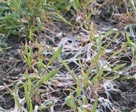

Болезни Пшеницы
Снежная плесень (Fusarium mivale)
Описание:
Снежная плесень (Fusarium mivale) - возбудитель снежной плесени. Активно развивается при низких температурах воздуха от 1 до 10 градусов Цельсия.Болезнь проявляется после таяния снега. Инфекция сохраняется на растительных остатках в почве. В течение вегетации возбудитель распространяется конидиями воздушно-капельным путем.
Стадии развития:
Развитие снежной плесени происходит ранней весной: возбудитель заболевания сначала проходит фазу конидиального спороношения, а затем формируются сумкоспоры, располагающиеся в нижней части стебля. На этой стадии грибок разносится на соседние растения дождем, ветром и благодаря насекомым.
Повреждения:
>На загнивших листьях, узле кущения нежный паутинистый налет белого или розового цвета. Спороношение имеет вид мелких бледно-розовых или оранжевых подушечек у основания стеблей. На поверхности отмерших листьев образуются бледно-розовые или оранжевые шарообразные плодовые тела диаметром 0,3 мм. Листья часто склеиваются и загнивают. Узел кущения разрушается.
Меры борьбы:
Обработка семян перед посевом протравителем разрешённым на культуре.